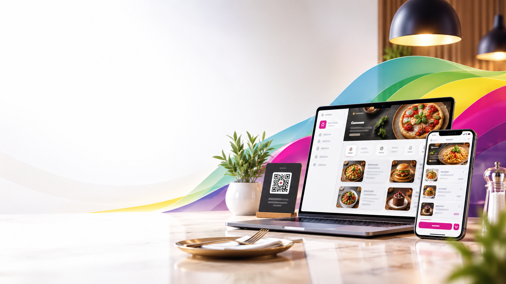

QR Code & Link Access
Guests scan a QR code or tap a link to open the full menu instantly, no app needed.
Menus by Colart
Guests scan a QR code and browse your full menu on any phone, no app or download needed, hosted and kept current by Colart.

What It Is
Menus by Colart is Colart's digital menu platform for restaurants, cafes, bakeries, and hospitality businesses. Every menu is designed, hosted, and maintained by Colart at its own web address, so guests can scan a QR code or tap a link to browse on any phone.
No two menus on the platform look the same. Each one is custom-built around the restaurant's own colors, logo, and layout, never a copied template.
Getting a digital menu live follows a simple process from your current menu to a finished, hosted page.
Share your current menu and branding, whatever format you already have.
Colart designs a menu that matches your restaurant's own colors and logo.
You receive a link and a QR code ready for your tables, counter, or signage.
Prices and items can be updated whenever you need, with no reprinting.
Menus by Colart works well for any business that wants guests browsing from a phone instead of a printed menu.
Full-service restaurants that want guests browsing a live, always-current menu.
Coffee shops and cafes that want a clean, scannable menu at every table.
Bakeries showcasing daily items and seasonal specials without reprinting.
Lounges and hospitality businesses that want a branded, mobile-first menu experience.
A few of the digital menus Colart has designed, built, and hosts today. Tap any card to see the live menu.
A live, branded digital menu hosted at its own web address.
A digital menu built to match this Lebanese bakery's own branding.
A full digital menu guests can browse straight from their phone.
A live digital menu hosted and kept current by Colart.
Menus by Colart is a digital menu platform. Each restaurant's menu is designed, hosted, and kept current by Colart at its own web address, so guests can scan a QR code or tap a link to browse the full menu on any phone, no app or download needed.
A QR code is placed on tables, counters, or signage. Guests scan it with their phone camera and it opens the full menu instantly in their browser.
Yes. Prices, items, and seasonal specials can all be updated on the digital menu without reprinting a single physical menu.
Digital menu hosting works well for restaurants, cafes, bakeries, and similar hospitality businesses that want guests to browse from a phone instead of a printed menu.
No. Guests browse the full menu straight from their phone's browser right after scanning the QR code or tapping the link, no app or download needed on their end.
Reach out through the Contact page or WhatsApp with your current menu and branding, and Colart will design, build, and host your digital menu, then hand you a link and QR code ready for your tables.
Send us your current menu and branding, and we'll design, build, and host your digital menu.